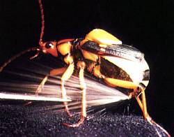
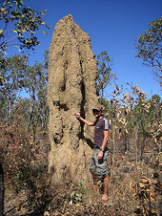

Bioinspired Engineering
Imagine 3.8 billion years of slow but steady research and development (otherwise known as evolution), covering everything we need to survive and thrive here on Earth, freely available for everyone. You just need to know where and (more importantly) how to look for it, because the evidence of this massive R+D effort is everywhere. The study and exploitation of naturally evolved solutions for engineering systems is variously known as bionics, biomimetics, biomimicry, biognosis, bionical creativity engineering, bioinspired engineering, and maybe others. While there’s no single agreed name, there is consensus on the fact that nature is a great source for engineering inspiration.
Bombardier Beetle
Macro Inspiration
The first person to imagine flight was surely inspired by the effortless elegance of birds. In fact virtually all planes flying today (with a few exceptions) use wings that can trace their origins to those of birds. The adoption of the wing for flight by engineers is a good example of macro inspiration, i.e., a clear and obvious solution visible in nature with the naked eye.
Sometimes the obvious solution to a problem is only obvious in retrospect, so the future surely holds more 'obvious' bioinspired engineering solutions. One such 'obvious' example is the bioWAVE from BioPower Systems. To generate power the bioWAVE mimics the swaying of sea plants on the seabed due to waves in the ocean overhead.
Another interesting bioinspired engineering solution for mixing-tank applications is a vortex-shaped impeller from Pax Scientific. The new impeller design promises a simple and efficient way to prevent stagnant water in collection tanks. The initial vortex shape that served as the inspiration for the impeller was formed by using a novel technique to create a casting of the vortex that water forms when it flows down a drain.
Micro Inspiration
We've looked to nature with our naked eyes and found much inspiration, but there is an even richer source of engineering inspiration lurking in the microscopic world around us. For instance, using an electron scanning microscope you'll see that a shark's skin is composed of microscopic plates (called denticles or placoid scales) that reduce drag and prevent algae growth. This discovery inspired the development of riblets for drag reduction on airplanes and coatings to prevent algae growth on ships' hulls.
By studying and mimicking the bombardier beetle's self-defense mechanism - rapid-firing of a boiling liquid jet under high pressure - researchers have proposed a more efficient mist carrier system for applications such as fuel injection, drug delivery and fire suppression.
Clearly the microscopic world has plenty of inspiration for engineers willing to look.
The advent of Computer-Aided Engineering analysis software, such as Computational Fluid Dynamics (CFD), has provided another powerful method for probing natural phenomena no matter what size - whether it's microscopic (as with the bombardier beetle) or planetary (as in the weather and climate system).
System Inspiration
Evolution, it seems, has favored system (sustainable) solutions over standalone solutions. For example, consider a classic predator-prey relationship. Over time the two species reach a cyclic equilibrium in terms of population numbers, with neither species dominating the other. Another example is the water cycle, where water evaporates from the oceans to fall as rain over land and is then delivered back to the oceans by streams and rivers.
It appears that engineering (including bioinspired engineering) has until now typically focused on standalone solutions to problems, e.g., the car as a personal transport, with little regard to its effect on the environment. Increasingly in the future sustainable solutions are essential to address such issues as global warming due to the emission of greenhouse gases, such as carbon dioxide. We need to consider the equivalent of an ecosystem solution, such as a forest that captures and recycles carbon while supporting a multitude of creatures.
Termite Mound
An excellent example of a sustainable system is a termite colony's mound. Mound is a poor word to describe what is essentially a highly evolved climate-control system. Where the outside temperature can vary between 35-104F, the temperature in a termite mound remains a near constant 87F.
Embracing sustainable total system solutions is essential for our future on Earth; fortunately there are abundant examples for inspiration throughout the natural world just waiting to be discovered.
Feedback
Questions? Ideas? Problems?

Recent blog posts
- CFD Simulates Distant Past
- Background on the Caedium v6.0 Release
- Long-Necked Dinosaurs Succumb To CFD
- CFD Provides Insight Into Mystery Fossils
- Wind Turbine Design According to Insects
- Runners Discover Drafting
- Wind Tunnel and CFD Reveal Best Cycling Tuck
- Active Aerodynamics on the Lamborghini Huracán Performante
- Fluidic Logic
- Stonehenge Vortex Revealed as April Fools' Day Distortion Field
 Get our Blog feed
Get our Blog feed